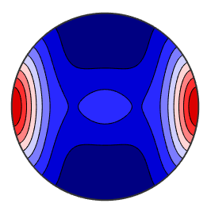
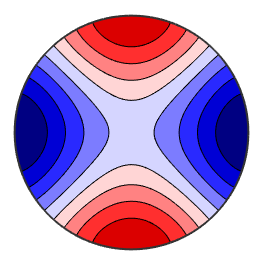
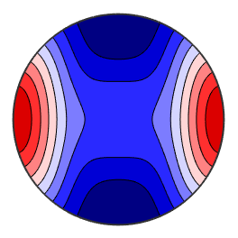
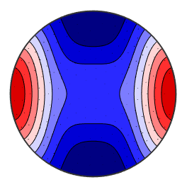
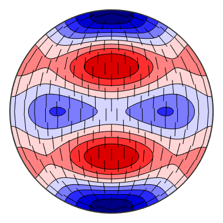

how to calculate and plot the elasticity properties
MTEX offers a very simple way to compute elasticity properties of materials. This includes Young's modulus, linear compressibility, Christoffel tensor, and elastic wave velocities.
| On this page ... |
| Import an Elasticity Tensor |
| Young's Modulus |
| Linear Compressibility |
| Christoffel Tensor |
| Elastic Wave Velocity |
Let us start by importing the elastic stiffness tensor of an Olivine crystal in reference orientation from a file.
fname = fullfile(mtexDataPath,'tensor','Olivine1997PC.GPa'); cs = crystalSymmetry('mmm',[4.7646 10.2296 5.9942],'mineral','Olivin'); C = loadTensor(fname,cs,'propertyname','elastic stiffness','unit','Pa','interface','generic')
C = tensor
propertyname: elastic stiffness
unit : Pa
rank : 4 (3 x 3 x 3 x 3)
mineral : Olivin (mmm)
tensor in Voigt matrix representation:
320.5 68.2 71.6 0 0 0
68.2 196.5 76.8 0 0 0
71.6 76.8 233.5 0 0 0
0 0 0 64 0 0
0 0 0 0 77 0
0 0 0 0 0 78.7
Young's modulus is also known as the tensile modulus and measures the stiffness of elastic materials It is computed for a specific direction x by the command YoungsModulus.
x = xvector; E = YoungsModulus(C,x)
E = 286.9284
It can be plotted by passing the option YoungsModulus to the plot command.
setMTEXpref('defaultColorMap',blue2redColorMap); plot(C,'PlotType','YoungsModulus','complete','upper')
The linear compressibility is the deformation of an arbitrarily shaped specimen caused by increase in hydrostatic pressure and can be described by a second rank tensor. It is computed for a specific direction x by the command linearCompressibility.
beta = linearCompressibility(C,x)
beta =
0.0018
It can be plotted by passing the option linearCompressibility to the plot command.
plot(C,'PlotType','linearCompressibility','complete','upper')
The Christoffel Tensor is symmetric because of the symmetry of the elastic constants. The eigenvalues of the 3x3 Christoffel tensor are three positive values of the wave moduli which corresponds to \rho Vp^2 , \rho Vs1^2 and \rho Vs2^2 of the plane waves propagating in the direction n. The three eigenvectors of this tensor are then the polatiration directions of the three waves. Because the Christoffel tensor is symmetric, the polarization vectors are poerpendicular ro each other.
% It is computed for a specific direction x by the % command <tensor.ChristoffelTensor.html ChristoffelTensor>. T = ChristoffelTensor(C,x)
T = Christoffel tensor
propertyname: elastic stiffness
rank : 2 (3 x 3)
mineral : Olivin (mmm)
320.5 0 0
0 78.7 0
0 0 77
The Christoffel tensor is the basis for computing the direction dependent wave velocities of the p, s1, and s2 wave, as well as of the polarisation directions. Therefore, we need also the density of the material, e.g.,
rho = 2.3
rho =
2.3000
which we can write directly into the ellastic stiffness tensor
C = addOption(C,'density',rho)
C = tensor
propertyname: elastic stiffness
unit : Pa
density : 2.3
rank : 4 (3 x 3 x 3 x 3)
mineral : Olivin (mmm)
tensor in Voigt matrix representation:
320.5 68.2 71.6 0 0 0
68.2 196.5 76.8 0 0 0
71.6 76.8 233.5 0 0 0
0 0 0 64 0 0
0 0 0 0 77 0
0 0 0 0 0 78.7
Then the velocities are computed by the command velocity
[vp,vs1,vs2,pp,ps1,ps2] = velocity(C,xvector)
vp =
11.8046
vs1 =
5.8496
vs2 =
5.7860
pp = vector3d
size: 1 x 1
x y z
1 0 0
ps1 = vector3d
size: 1 x 1
x y z
0 1 0
ps2 = vector3d
size: 1 x 1
x y z
0 0 1
In order to visualize these quantities there are several posibilities. Let us first plot the direction dependend wave speed of the p-wave
plot(C,'PlotType','velocity','vp','complete','upper')
Next we plot on the top of this plot the p-wave polarisation direction.
hold on plot(C,'PlotType','velocity','pp','complete','upper') hold off
Finally we visualize the speed difference between the s1 and s2 waves together with the fast shear-wave polarization.
plot(C,'PlotType','velocity','vs1-vs2','complete','upper') hold on plot(C,'PlotType','velocity','ps1','complete','upper') hold off
set back default colormap
setMTEXpref('defaultColorMap',WhiteJetColorMap)
| DocHelp 0.1 beta |